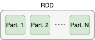
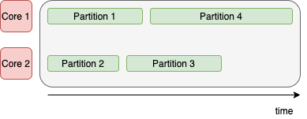
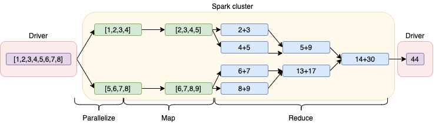
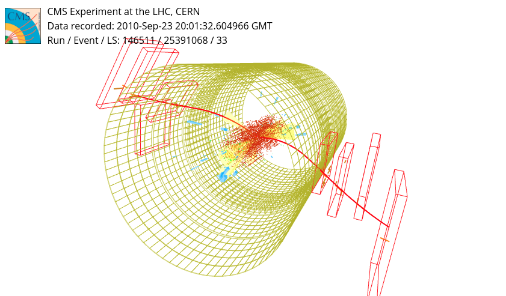
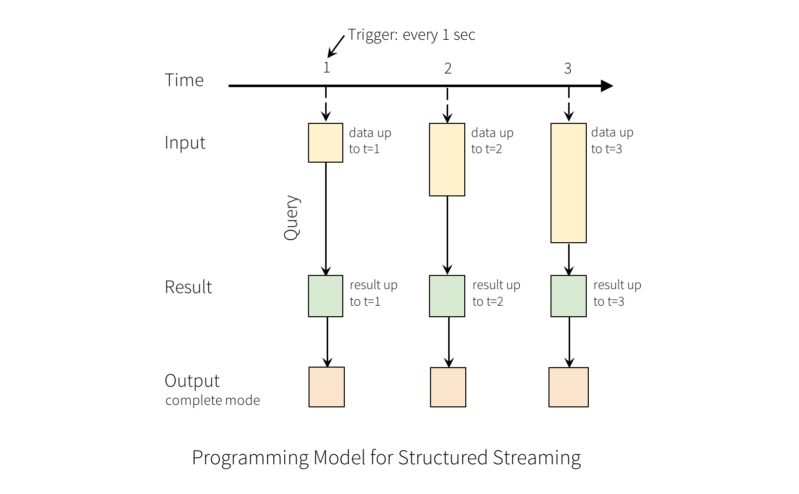

As discussed in the MapReduce chapter, Hadoop provided a solid foundation for distributed processing, but it has notable limitations for certain workloads:
Complex/iterative algorithms (e.g. k-means clustering) require chaining multiple MapReduce jobs, making them awkward to implement and slow due to repeated disk I/O between stages.
MapReduce I/O bottleneck: every intermediate result is written to disk (HDFS), then read back for the next stage.
Batch-only: Hadoop MapReduce processes data “at rest” in large batches; it does not natively support real-time or streaming processing.
Apache Spark addresses all three limitations:
Hadoop MapReduce
Apache Spark
Strictly Map → Reduce pattern
Arbitrary DAG of transformations — not tied to MapReduce
Disk-based intermediate storage
In-memory processing — massive speedup for iterative algorithms
Batch processing only
Both batch and real-time streaming processing
Spark was originally developed at UC Berkeley AMPLab in 2009 and became an Apache project. It is open source, written in Scala, with official APIs for Python (PySpark), Java, and R.
RDD (Resilient Distributed Dataset) — the low-level, unstructured API.
DataFrame / Dataset — the high-level, structured API built on top of RDDs.
Spark SQL — SQL interface for structured data (DataFrames).
Structured Streaming — continuous stream processing via the DataFrame API.
MLlib — distributed machine learning library.
GraphX — graph computation.
PySpark vs Scala Performance
Spark is written in Scala and runs on the JVM. The PySpark API communicates with the JVM via the Py4J bridge, which introduces serialisation overhead when data is passed between Python and Java processes. For most DataFrame/SQL operations this overhead is minimal because computation runs on the JVM regardless. However, Python UDFs (User Defined Functions applied row-by-row) bypass the JVM and can be significantly slower than equivalent Scala UDFs.
In this course PySpark is used for accessibility. For production pipelines with strict performance requirements, Scala/Java provides the highest throughput. Vectorised Pandas UDFs (via PyArrow) offer a middle ground.
11.3 Spark Cluster Architecture
Spark uses a Master/Slave architecture.
11.3.1 Driver and Executors
When a Spark application is submitted:
A Driver process is created. The Driver is the application’s brain: it converts user code into a plan of smaller execution units (tasks), and distributes and schedules those tasks across the executors.
A Spark Context is created within the Driver for each application, allowing it to access cluster resources via the Resource Manager.
A set of Executors are created on the cluster’s worker nodes. Each Executor:
Executes the tasks assigned by the Driver.
Reports the computation state back to the Driver.
Stores data in memory or disk across the lifetime of the application.
The Driver and Executors live in Java Virtual Machines (JVMs) within the worker nodes. One Executor cannot span multiple nodes, but one node can host multiple Executors.
11.3.2 Cluster Resource Managers
Spark works with several cluster managers:
Spark standalone cluster manager (built-in)
YARN (Hadoop’s resource manager)
Mesos
Kubernetes
11.4 RDD: Resilient Distributed Dataset
The RDD is Spark’s low-level data abstraction: an immutable, partitioned collection of records that can be operated on in parallel.
Key properties:
Property
Description
Distributed
Split into partitions, each hosted on an Executor (data locality)
Resilient
Contains full lineage information to recover from partition loss
Immutable
Transformations produce new RDDs; the original is never modified
In-memory
Spark keeps RDDs in Executor memory across the application lifetime
Unstructured
Data stored as Java/Python objects (no imposed schema)
One Executor processes one partition at a time. More Executors can process more partitions simultaneously — this is the unit of parallelism.
11.5 Transformations and Actions
Operations on RDDs fall into two categories:
11.5.1 Transformations
Operations that take one or more RDDs as input and produce a new RDD. Transformations are lazy — they are not executed until an Action is triggered.
Narrow transformations: each input partition contributes to exactly one output partition (e.g. map, filter, flatMap). Can be pipelined without data shuffling.
Wide transformations: input partitions contribute to multiple output partitions (e.g. groupByKey, reduceByKey). Require a shuffle — data is repartitioned across the cluster.
11.5.2 Actions
Operations that trigger execution and return a value to the Driver (or write data to storage).
Spark defers execution until an Action is triggered. This laziness brings two main benefits:
Minimises driver–executor communication: transformations are accumulated as a recipe, not executed immediately.
Enables optimisation: Spark can optimise the entire transformation pipeline before executing it.
Spark represents the full computation plan as a DAG (Directed Acyclic Graph):
The DAG Scheduler groups transformations that do not require data exchange across partitions (narrow transformations) into stages.
Operations within a stage are pipelined.
All tasks are dispatched by the Driver to the Executors as an optimised execution plan.
11.7 Spark DataFrame
The DataFrame is the high-level structured API, built on top of RDDs:
Similar interface to Pandas DataFrames.
Offers SQL queries via the SparkSQL interface.
Distributed and fault-tolerant (backed by RDDs).
Suitable for structured and semi-structured datasets with a defined schema.
A DataFrame always has an underlying RDD. The schema information allows Spark to apply additional query optimisations not available to raw RDDs.
11.8 Real-Time Analytics and Structured Streaming
Processing unbounded data streams in real time is common across many domains:
Sensor readings from physics detectors
IoT device readings
Financial transaction monitoring
Web application event streams
The challenges are significant: potentially out-of-order data, high throughput, exactly-once processing guarantees, and load balancing.
Two common approaches:
Approach
Characteristics
One-Element-at-a-Time
Fixed pipeline; triggered on each new record. Low latency, limited throughput.
Micro-batching
Accumulate data over a fixed time window (e.g. 500 ms), then process as a batch. Higher throughput, latency limited by batch interval.
A common real-time streaming pattern is the ETL pipeline:
Extract — read raw events from a source (e.g. Kafka topic, sensor feed)
Transform — apply business logic: filtering, aggregation, enrichment, join with static data
Load — write processed results to a sink (e.g. database, dashboard, another Kafka topic)
Spark Structured Streaming expresses the full ETL pipeline as a single streaming query, making the code nearly identical to a batch DataFrame transformation.
11.8.1 Spark Structured Streaming
Spark Structured Streaming is the modern streaming API (based on DataFrames, replacing the deprecated Spark Streaming/DStream API (not fully supported since Spark 3.5)).
The key idea: treat the continuous input stream as an unbounded table to which new rows are continually appended. Queries over this table are expressed identically to queries over static DataFrames.
Three output modes:
Complete: the entire output table is written to the sink on each trigger.
Append: only rows added since the last trigger are written.
Update: only rows updated since the last trigger are written.
Input sources include Kafka, Amazon S3, TCP sockets, and others. Output sinks include databases, files, Kafka topics, and the console.
11.8.2 Sources and Sinks
Structured Streaming uses a unified Source / Sink abstraction:
A streaming query is expressed as: Source → Transformations → Sink.
11.9 Hands-on: Apache Spark
The following hands-on sessions use a standalone Spark cluster deployed on your machine via Docker Compose. The cluster provides:
A Spark master accessible at spark://spark-master:7077
A Spark UI at localhost:8080 (master) and localhost:4040 (active application)
Note: These notebooks require the Docker cluster to be running and are not executed during book rendering.
11.9.1 Lecture 1: Introduction to PySpark — RDD
Distributed computing over a cluster is a widely adopted strategy in the case of many applications both in- and out-side academia.
Immagine you are interested in working on a very large dataset, at the scale of hundreds of Terabytes or even Petabytes. As discussed in the Data Management part of the course, a large horizontally scalable storage solution is going to be necessary to host the entire dataset. Even if we assume the storage solution is sorted out, we are left with the issue… how can we deal with all these data in order to produce the “final result” we aim at?
Data are distributed over many nodes, and collecting all data in one node (e.g. loading the entire dataset in a single computer memory) would be impossible
Not all data in the entire dataset is necessarily going to be relevant to solve your problem. You may want to first load all data, explore it, filter it and pre-process it
Then, you may want to move to the actual data analysis phase, and possibly to the application machine learning models on the preprocess data. However, even the preprocessed data may not be enough to fit your local machine memory, and once again a distributed system is going to be necessary.
What you would like to do is to run the pre-processing on the nodes of the cluster where the data is distributed, and return only the high level quantities that will be used in the analysis, or even the end-result of the entire analysis.
This is the core concept of distributed computing frameworks like Hadoop and Spark: the code/execution goes to the data, rather than the data coming to the machine where the code resides (data locality).
11.10 Docker Cluster
For this set of lectures we will work with a standalone Spark cluster deployed on your machine via Docker. This is a mock-up of a larger scale cluster setup, and can also be used to develop and test your application before deploying it on a “production” cluster.
We are using docker compose to create the cluster with multiple Docker containers acting as computing nodes.
The cluster dashboard is exposed at localhost:8080 and the master is already available at spark://spark-master:7077
12 Spark Session
We can now create the Spark session.
With the following command we are asking to the master (and the resource manager) to create an application with the required resources and configurations.
In this case we are using all the default options (e.g. number of core and number of executors), but we can also specify them by hand with .config("spark.some.config", "value").
The list of available configurations can be found here.
Show code
# import the python libraries to create/connect to a Spark Sessionfrom pyspark.sql import SparkSession# build a SparkSession # connect to the master node on the port where the master node is listening (7077)# declare the app name # configure the executor memory to 512 MB# either *connect* or *create* a new Spark Contextspark = SparkSession.builder \ .master("spark://spark-master:7077")\ .appName("My first spark application")\ .config("spark.executor.memory", "512m")\ .getOrCreate()
Check the content of the Spark Session spark object.
This is the entry point to the main Spark functionalities.
Show code
spark
The Spark UI link provided won’t work, as it refers to the Docker container running the Spark application.
Port mapping is however provided for the 4040 port and you can open the Spark UI link to the application pointing your browser to localhost:4040.
From the Spark Session we can access the Spark Context.
The Spark Context is the driver application program we will use to submit applications to Spark, and it is used to work with RDDs
Show code
# create a spark contextsc = spark.sparkContext# print its statussc
12.1 Parallelize!
The main feauture of Spark is to distribute data in a number of partitions, either using the memory or the disk available in the executors.
Do also keep in mind the difference between the Worker and the Executor in Spark!
The first command we will use is parallelize().
This is a function of the SparkContext (sc) object and it is used to create a Resilient Distributed Datasets (RDD) from a list collection. In other words, it takes a collection and split it amongst the executors.
We will start with a basic example to get familiar with the main functions of Spark RDDs.
Starting from a python “dataset” we create an RDD, i.e. a distributed dataset residing on the cluster, dist_data, and then operate on it in parallel.
Show code
# a simple python list, as the starting datasetdata = [1,2,3,4,5,6,7,8]
Show code
# parallelize it over the available executors!dist_data = sc.parallelize(data)
Go and check the Spark web UI - http://localhost:8080 for the Master node web UI - http://localhost:4040 for the SparkContext web UI (where you application will reside)
In principle we could expect the application to report something related to our request of parallelizing data over the cluster…
But instead… nothing happend in the Web UI, even though we asked Spark to parallelize our data into a number of partitions!
That’s because parallelize is not an action, but a transformation, and thus is lazy by nature.
We can trigger it by using an action, for instance the count action, a function used to count the number of elements in the RDD.
Show code
# count elements of the rdddist_data.count()
Let’s go back and check the Spark web UIs and interpret its content…
If you are using two executors (i.e. two cores of your CPU in this example), in the WebUI you will see two parallel lines for this task.
That’s because the RDD consists of two partitions.
Indeed, under the hood, the RDDs are stored and represented as partitions, “small blocks” of the original dataset that will be unit of parallelism.

One partition can be processed by one PU (e.g. a core of a CPU) at a time. More PUs can thus operate on multiple partitions at the same time, with the limit of 1 PU per partition.
In other words, if the RDD is composed of one partition, even if we have two total available cores, then only one task at a time will be run.
On the other hand, if the RDD partitions are four and we still have two available cores, only two of the partitions will be processed in parallel.

To split our data in an arbitrary number of partitions we can use numSlices
Show code
# parallelize using a different number of partitionssc.parallelize(data, numSlices=8).count()
We can ask Spark to count the number of partitions of a given RDD with the method getNumPartitions()
Show code
# sc.parallelize() is itself an RDD# thus we can call getNumPartitions() on the RDD created via the parallelize transformationsc.parallelize(data, numSlices=8).getNumPartitions()
By default, Spark will try to split the dataset into a number of partitions equal to the number of executors.
Not always successfully though…
To parallelize your computation effectively, you should make sure what is the number of slices your dataset is parallelized into, and how it compares with the available computing resources.
Show code
# get the number of partitions of the RDD created previouslydist_data.getNumPartitions()
It’s important to visualize that the RDD resides in the worker nodes, and not in your client/local machine.
If we print the dist_data object from Jupyter we will not see the actual data contained in the RDD, but only that this is a distributed dataset.
Show code
# print the dist_data object from hereprint(dist_data)
This is actually a very important concept, as in a distributed system the datasets we are processing are typically much larger than the available memory of the driver (it’s one of the main reasons we use a distributed system in the first place).
Returning the content of the whole dataset in a single machine is not a clever idea.
However, a distributed dataset can be collected in the driver with collect().
By issuing this action, all the workers will send back all the blocks of the RDD.
This is generally used to collect only the end results after a computationally heavy processing is first run on the worker nodes, and a slim and manageable result can be retrieved.
This function should be used with caution since it fetches the entire RDD to a single machine and can cause the driver to run out of memory.
Show code
# collect the distributed dataset (so far, a mere list)dist_data.collect()
If we have a massive dataset and we are looking for inspecting only a small subset of elements we can use take(num).
take allows to return only the first num number of elements from the RDD, thus limiting the amount of data we are collecting from the cluster.
Under the carpet, Spark will look at one partition’s data, and will decide if one is enough to satisfy your request, or it will need to retrieve data from more than one.
Show code
# retrieve a few elements from the RDDdist_data.take(3)
12.2 Map and Reduce
We can now write our first map-reduce application.
The method map(f) will apply a function f to each element of the RDD.
For instance, let’s create a simple function to increment by 1 each of the elements of the RDD.
[1,2,3,4,5,6,7,8] --> [2,3,4,5,6,7,8,9]
The function itself is very simple, we can use a Python lambda function to take care of that:
lambda(x: x+1)
Remember, this is a transformation, not an action. Being a map phase-equivalent to the Hadoop Map-Reduce, we have the idea that all partitions will be operated in parallel.
To trigger the transformation, we can chain it with an action, such as collect.
Show code
# increment each value of the array with map# and collect the resultdist_data.map(lambda x: x+1).collect()
Differently from plain Hadoop, in Spark we can chain together multiple transformations, without having to strictly follow the Map-then-Reduce pattern.
For instance, we can even run an entire chain of map functions one after the other with no reduce function at all.
Let’s chain a +1 increment function with a /2 function to divide the result of the previous multiple map transformations.
We can continue using map and lambda functions to do this, and chain a .map() after other .map() functions.
So far we can see that we have already moved away from the strict pattern of Map-Reduce “a-la-Hadoop”, where every operation is a single Map phase followed by a single Reduce phase.
In this example we have instead 2 Map phases, and a single Reduce phase (the collect).
The optimization provided by the DAG scheduler will hide the map functions under the same processing stage, and will take care of running them pipelined as fast as possible.
Another important operation available is an explicit reduce function.
Reduce is an action that aggregates all the elements of the RDD using some user-provided function, and returns the result to the driver.
We will see later on another version of reduce, reduceByKey, wich performs the reduction for elements with the same key, and we’ll reproduce the wordcount example.
For the time being, let’s explore a simple reduce implementation.
Reduce actions can take a function as argument, which will be applied to all the elements of the RDD, to perform some kind of aggregation.
For example, we can think about summing the elements of a RDD in pairs with a lambda function.
Show code
# increment each element of the dataset (transformation)# and sum all of them in pairs (action)dist_data.map(lambda x: x+1)\ .reduce(lambda x, y: x+y)
A schematic view of this simple Map-Reduce application can be seen scketched here:

Please note how the reduce function does not necessarily have to complete its task in a single iteration. In this case, the sum in pairs will continue on until we are left with a single scalar.
12.2.1 Exercise 1
Write a simple reduce function to find the minimum of dist_data.
A simple approach is to evaluate the min of pairs of values x and y, by reducing the min(x,y) function.
Show code
# reduce the min function over pairs of values for the dist_data dataset
12.2.2 Exercise 2
Create a set of 100 points in a 3D space, rapresented as tuples of randomly-generated floats, and calculate the maximum distance of the points from the origin (0,0,0).
Create the collection of tuples on the client (Python)
Parallelize the collection in a Spark RDD
Use Spark to evaluate the euclidean distance of each point from the origin
Use Spark reduce to evaluate the maximum distance
Show code
# 1. Create the collection of tuples on the client (Python)
Show code
# 2. Parallelize the collection in a Spark RDD
Show code
# 3. Use Spark to evaluate the euclidean distance of each point from the origin
Show code
# 4. Use Spark reduce to evaluate the maximum distance
We should keep in mind that every time we move data from the client to the cluster or from the cluster to the client we are potentially paying a large price: - moving data from the client to the workers implies a large amount of data transfers, through the driver, and to the executors. If we can read data directly form the worker nodes (we’ll see later a couple of examples) this should always be preferred. - on top of this issue, moving data from the workers to the client implies an additional risk. We might have more data on the cluster than what we can afford to store locally on our client machine. Moving back data (i.e. doing a collect) from the cluster might crash the driver, and crash your application. Refrain from asking Spark to collect an entire GB-, TB- or even PB-sized dataset to your laptop.
12.2.3 — Intermezzo — Broadcasting small shared data
Sometimes many parallel tasks need access to the same small piece of common data.
A typical example is a lookup table, a dictionary, or a small configuration object.
In Spark, we can explicitly broadcast this object to the workers using sc.broadcast.
This avoids sending the same object repeatedly with every task, and instead it will preserve it in the memory of all the executors for the duration of the entire task.
Show code
# some common datalookup = {"a": 1,"b": 2,"c": 3,}# broadcast the lookup dictionary to all executorslookup_broadcast = sc.broadcast(lookup)# create an RDD with some keysrdd = sc.parallelize(["a", "b", "c", "a", "d"])# use the broadcast variable to look up values for each key in the RDDresult = rdd.map(lambda x: lookup_broadcast.value.get(x, 0))# collect the resultsresult.collect()
12.2.4 Exercise 3 - compute \(\pi\)
Estimate \(\pi\) by simulating random points in the unit square (side length of \(1\)) and counting how many fall in the unit circle.
The probability of one point falling inside the circle is \[
P = \frac{\text{Area circle}}{\text{Area square}} = \frac{\pi}{4}
\]
We can estimate this probabiliy by counting the number of simulated points inside the circle \[
P = \frac{\text{\#Points in circle}}{\text{\#Points}}
\]
This can be done in Spark running the computation in parallel with the following steps: 1. Create a “dummy RDD” containing placeholders for all the points (e.g. use the value 0 as placeholder for each data point) 2. Generate the points as random (x,y) pairs and check if each of them falls inside/outside the circle 3. Count the points inside the circle
Think about which transformations are needed to generate the points and to check if they fall inside the circle. Combine all the transformations and the action in a single pipeline.
Show code
num_points =# a reasonable amount, such as 100_000# instantiate a "placeholder RDD"points_rdd =def in_circle(dummy):# generate a point randomly and check if# it is inside the circle # by returning 0 or 1# count the number of points inside the circle# print the final result
The same result can be achieved using the filter transformation.
filter(f) returns a new RDD containing only the element of source RDD on which f is true.
Show code
# perform the same exercise using filterpoints_inside = points_rdd \ .map(""" the map function """) \ .filter(""" the filter function """) \ .count()# print result
## Reduce by key and flat map
Consider the following dataset where each element consists of a tuple (group, value) (a simple example of a key-value pair).
This can be for example: - group = product class, and - value = revenue
Or readings from a set of sensors: - group = sensor identifier - value = reading
We may be interested in operating only on the values of the dataset, discarding the keys.
We can write a map function to do this, using the python syntax to access only the [0] (the key) or the [1] element of the tuple.
For instance, we can implement a simple increment of +1 to all values via a map function.
Show code
# operate only on the valuesclass_rdd.map(lambda el: (el[0], el[1]+1)).collect()
The same result can be achieved using mapValues.
This allows to write an equivalent map function that applies only to the values of the groups disregarding the keys.
Show code
# do the same using map valuesclass_rdd.mapValues(""" increment values by 1 """).collect()
We can perform a reduce function for each class using reduceByKey: in this way we are applying the reduce function only to all the elements of the same class.
Despite its name, reduceByKey is not an action, but a transformation, since it returns a distributed dataset (the result of an aggregation by key could still give a very large number of items, if the number of keys is large).
Let’s compute the minimum value of all elements of each group using reduceByKey and collecting the result.
Show code
# compute the minimum using reduce by keyclass_rdd.reduceByKey(""" compute the minimum per group """)\ .collect()
We can further filter our results by using takeOrdered to get the first n results sorted by a given field.
By default, takeOrdered(n) takes the first n elements of the RDD in ascending order. To get the descending order (or any other arbitrary order) we can specify a function, such as:
lambda x: -x
Get the maximum value for each group, and return only the 2 with the largest values
Show code
class_rdd.reduceByKey(""" compute the maximum per group """) \ .takeOrdered(""" select the 2 elements with largest value """)
If we are not interested in treating the dataset as key-value pairs, or in general we have a non-flat dataset (e.g. each element of the RDD is a list, or another object), we can use flatMap to “explode” each element returning a plain sequence of elements.
This can be extremely useful if you have data stored as arbitrary data structures, but you would like to use them as plain lists of items.
Show code
# flatten the class rddclass_rdd.flatMap(lambda el: el)\ .collect()
Show code
# create a list of elements, and flatten them into a single list of itemssc.parallelize([[1,2,3], [2,3,4]]) \ .flatMap(lambda x: x) \ .collect()
### Exercise 3: word count
Let’s rerun the word-count example seen in class when discussing the Map-Reduce programming paradigm, starting from the following arbitrary text.
Show code
message = ['Three Rings for the Elven-kings under * the sky,','Seven for the Dwarf-lords in $ their halls of stone,','Nine for Mortal # Men doomed to die,','One for [ the Dark Lord on his dark throne','In the Land of _ Mordor where the Shadows lie.\n','One Ring to } rule them all, One @ Ring to find them,','One Ring $ to bring them all and in the darkness bind them','In the Land of Mordor * where the Shadows lie.\n']print(''.join(message))
The goal is counting the occurence of each word using a map-reduce approach in Spark.
But first, you may want to need to clean-up the dataset by removing all “stray” symbols such as @ and $.
To avoid double counting the same word when in lower- or upper-case, you may also want to change all the words to lower case.
Hint: use string.punctuation or a regular expression to remove the unwanted characters
Show code
import stringstring.punctuation
Show code
# parallelize the messagemessage_rdd = sc.parallelize(message)message_rdd.collect()
Show code
# step 1: create the words_rdd where each element is a word# eg: ['one', 'ring', 'to', 'rule', 'them']def clean_row(row):# this function should:# 1. clean a row from punctuation # 2. put each word in lowercase# 3. and return the list of words word_list = []# your code# ---return word_list# apply transformationwords_rdd =""" your transformation """# print a few itemswords_rdd.take(10)
Show code
# step 2: perform word count!# -> crate pairs (word, 1)# -> reduce based on the word and countword_count_rdd =""" your word-count """# print your resultword_count_rdd.collect()
The method takeOrdered(n, key) allows to collect only the first \(n\) elements based on the ordering provided by key. Ordering is by default ascending.
Show code
# collect the 10 most occurent wordsword_count_rdd.""" your takeOrdered """
12.2.5 Exercise 4 - Distributed linear regression
The files in ../datasets/lecture1/ contain a series of measurements of a sensor. Each measure is in the form
Measure N: (t,val)
There could be pairs such as (t, None), corresponting to missing values. This measure should be removed.
We are interested in knowing if there is any sort of relation between t and val.
The first task consits in reading each file and creating an RDD containing as element the pairs (t,val).
We can first inspect the first lines of a file to get a sense of the data:
Show code
!head ../datasets/lecture1/file_1.txt
Imagine that each file contain millions of measurements and there may be thousands of files.
Reading all the files with Python on our local machine (client-side), and then using parallelize should be avoided at all costs. This would be a very inefficient way to read the data, as we would have to read all the files in the driver (possibly getting out of memory), then splitting the data in the workers.
Instead, we can parallelize the list of files and then read all files in parallel directly from the Spark executors.
Show code
base_path ='/mapd-workspace/datasets/lecture1/file_{}.txt'file_list = [base_path.format(i) for i inrange(1,5)]files_rdd = sc.parallelize(file_list)files_rdd.collect()
12.2.5.1 Note
In this case we could have used the built-in Spark function textFile, which takes as input the path to the files and read them directly into an RDD.
To access a file with this function we need to prepend file:// if the file is in the local file system. If the file is in hadoop the path will be similar to hdfs://namenode.com:8020/path_to_the_file. In the same way, if the file is stored on object stores using the s3 API (such as the one used in CloudVeneto) the path will be s3://.
The Spark function textFile could be used in this case as the input files are stored in a plain text .txt format. In many other cases, however, a custom data loader is required instead, as the data will be stored in a specific format, impossible for Spark to interpret without some instructions. On the other hand, we should try to use the built-in data readout functions as much as possible since they are much more performant than our custom python code.
In this example we will write a custom data loader, that could be generalized to all kinds of files and data formats.
Starting from the RDD files, write a map function that convert data into an RDD, data_rdd, where each element is a tuple (t, val).
During this preprocessing phase remember to remove points with None as measure.
The elements of data_rdd should finally be something like:
[(0.0,9.93), (-1.0,9.02), ...]
In order to do this, we can use regular expressions (or regex).
A regular expression is a sequence of characters that allows to identify and select a pattern in a string, instead of a specific substring. Most editors (including Jupyter) allow to use regex to find and replace text based on patterns, and several interesing sites offer a simple interface to learn and experiment with regexp, e.g. https://regex101.com/
All following charachters are considered “meta-characters” in regex
. ^ $ * + ? { } [ ] \ | ( )
In a regular expression, all these symbols will be not interpreted as their characters, but are used to build up the patterns and search for matches in the text.
The main notable examples are:
[ ] square brakets meaning exactly 1 character
regexp
interpretation
[a]
the letter a
[ax]
the letter a or x
[a-x]
any letter from a to x
[a-zA-F]
any letter from a to z and from A to F
[0-9]
any number from 0 to 9
^ represents a not
regexp
interpretation
[^b02]
all charachters but b,0and 2
. represents any character at all
regexp
interpretation
.
all charachters
? makes the preceding character in the regular expression optional
regexp
interpretation
colou?r
color or colour
* match the preceding character (or combination) zero or more times
regexp
interpretation
go*gle
ggle,gogle,google,gooogle,…
\t matches a tab
\n matches a new-line
^ (outside of []) matches the start of a line
$ matches the end of a line
Regex can be used in plain Python with the re module.
Let’s use the re module to implement the appropriate regular expression to clean up our data.
We should find all float values possibly starting with a +/- sign and collecting them in pairs.
Show code
# test the regex pattern with a fake measurementimport refake_meas ='Measure 0: (.05,0.70)'float_pattern ='-?[0-9]*\\.[0-9]*'test_ = re.findall(f'{float_pattern},{float_pattern}', fake_meas)test_
Show code
def parse_file(file): # this function should:# 1. open the file and read all lines# 2. apply the regex to extract the values # 3. sanify the data by removing all measurement pairs with non-numerical values# 4. create a `points` list where each entry is a tuple of the two values/coordinates points = []# your code# ---return pointsdata_rdd =""" parallelize the reading and parsing of the measurements """data_rdd.take(10)
With sample(with_replacement, fraction) we can sample some points from the original RDD.
This is useful if we want to collect only a given fraction of our data, without dumping the entire dataset with a collect.
Show code
import matplotlib.pyplot as plt import numpy as np# collect a sub-sample of your datadata = np.array(data_rdd.sample(False,0.2).collect())plt.scatter(data[:,0], data[:,1]);plt.xlabel(r'$p_x$');plt.ylabel(r'$p_y$');
We will now implement a distributed gradient descent and use it to find the best parameters for a linear model.
Given an input \(X\) the ouput of the model is
\[
Y = W X = w_{0} + w_1 x_1 + \dots + w_p x_p
\]
In our case, we have \(Y=y(w,x)\), \(W = [w_0, w_1]\) and \(X=[1, x]^T\), in other words
\[
y(w,x) = w_0 + w_1 x
\]
We are interested in estimating the optimal parameters \(w^\star\) of the line fitting our data.
To do this we will use gradient descent, an iterative procedure that allows us to find a local minumum of a differentiable function.
In our case, we would like to minimize the square residuals, i.e.
We can now write a map-reduce job used to estimate the parameters using gradient descent on the full dataset.
We start by defining the weights vector and initializing it to some values, e.g. \((10, 0.5)\) is a good guess…
Show code
# use numpy to create the W weight arrayW =""" a simple numpy array """
Implement then the functions computing the prediction given as input \(x\) and the current weights W
Show code
# predict y for any given x and weights Wdef predict(x, W):# return prediction # ---# test the function in local # ---
Implement the function computing the gradient for one example, given as inputs: 1. the point \(P=(x,y)\), and 2. the current set of weights \(W\).
Remember that the gradient has two components, one per parameter.
Furthermore, the normalization \(\frac{1}{n}\) can be ommited since we can apply it afterwards, having summed the gradients of all examples.
Show code
# compute the gradient def gradient(P, W):# return the prediction given the x value of P and the weights W# and compute gradient# ---return gradient# test the function in local# ---
We are now ready to implement the gradient descent and find the optimal line parameters.
Hint: compute the gradient for each point in parallel, and them sum all of them. Finally, use this sum to update the weights vector.
Show code
# count points based on the partitioned datanum_points =""" count the points in the partitioned data """# re-declare the weight vector here: # this is useful if the cell is run multiple timesW =""" a simple numpy array """# define the learning ratelr =0.01# define the number of iterationsnum_it =20for i inrange(num_it):# run the gradient descent in parallel and then sum the gradients grad =""" the parallelized gradient evaluation """# ---# update the weights according to the learning rate and the gradient W =""" the weights update """# --- # print the resultsprint("Final parameters: x0={:.2f}, x1={:.2f}".format(W[0], W[1]))
Check out the results by plotting the data points and the resulting best fit line.
Show code
data = np.array(data_rdd.collect())plt.scatter(data[:,0], data[:,1]);x = np.arange(-10,11)y = W[0] + W[1]*xplt.plot(x, y, color='red', lw=2);plt.xlabel(r'$x_{0}$');plt.ylabel(r'$x_{1}$');
Finish up by computing the residuals using Spark, and plot their distribution in a histogram.
The residual of the point \((x_i, y_i)\) with respect to the model \(y(x)\) is simply defined as
\[
R_i = y(x_i) - y_i
\]
Show code
# compute the residualsresiduals_rdd =""" residual evaluation """
Show code
# plot its distributionplt.hist(residuals_rdd.collect(), range=(-1,1), bins=50);plt.xlabel("residuals");plt.ylabel("counts");
Note
By running the previous cell we asked Spark to return the entire residual RDD object. This is not a sizeable dataset in this specific example, but it might be the case in a real-life scenario, where you may have lots of records stored in a distributed cluster. Returning the entire dataset just to produce a histogram is extremely inconvenient, as it implies large data transfers from the executors to the driver, and finally to the client (possibly resulting in getting out of the driver memory).
What you should be doing instead is to evaluate the histogram remotely and in parallel, and return the histogram as a set of bins and counts. This way the data transfer from the executors to the driver is minimized, avoiding possible issues.
You should be able to write a Map-Reduce function to create an histogram (consider this an Extra-exercise), but Spark is also providing some built-in functions to compute simple histograms remotely.
Show code
# use the spark RDD histogram method to return the histogram from the clusterhist = residuals_rdd.histogram(np.linspace(-1,1,50).tolist())plt.stairs(hist[1], hist[0]);plt.xlabel("residuals");plt.ylabel("counts");
12.3 Caching
From the WebUI we can see that in each iteration Spark is computing every operation from the very beginning, i.e. starting from reading the list of filenames and runnign the parallelization of the text files!. This would not really necessary, as this first operation should not need to be re-executed every time we need to access the dataset.
With persist() we can instruct spark to put intermediate results into the executors’ memory, e.g. after the function parsing the files.
In this way the same dataset will be loaded in the next iterations much faster, at the cost of having the dataset stored in memory.
Note-1: to be precise, there could be different levels of persistence of data into the executors’ memory.
Note-2: one should be very careful not to abuse the caching of datasets. Caching itself takes time and resources, and caching all intermediate stages of your dataset might end up taking a toll on the performance (and saturating the available memory of the executors).
Show code
# persist the original RDDdata_rdd = data_rdd.persist() # persist is a transformation, it will be triggered # only once we apply an action on the RDD!data_rdd.count()
It is worth noting that, in Spark, persist() marks the RDD for persistence and returns the same logical RDD handle.
In practice, both of the following are valid:
data_rdd.persist()
and
data_rdd = data_rdd.persist()
In this and later notebooks, we will prefer the second form, with explicit assignment. This is not strictly required by Spark, but it makes the intent visible in the code: from this point onward, we want to work with the persisted version of the dataset. It is also a useful habit because other frameworks, such as Dask, do not always follow exactly the same caching semantics, and explicit reassignment makes the pattern more portable.
Show code
# run the same code as previously # and have a look at the spark application webUI # under the Storage tabprint("Final parameters: x0={:.2f}, x1={:.2f}".format(W[0], W[1]))
The RDD can (actually, should) be removed from memory with unpersist(), freeing up the executors’ memory when needed.
Show code
# free up the memorydata_rdd = data_rdd.unpersist()
13 Stop worker and master
Show code
# stop the running Spark contextsc.stop()
Show code
# stop the running Spark sessionspark.stop()
Finally, use docker compose down to stop and clear all running containers.
13.0.1 Lecture 2: Spark DataFrames
Spark SQL is the module within Spark dedicated to storing and processing structured datasets.
As we discussed at the beginning of this course, structured datasets are common in both scientific and non-scientific environments.
Structured data is typically represented using abstractions such as Pandas Dataframes or relational database tables.
In Spark, structured datasets are referred to as Spark Dataframes. A Spark Dataframe is built on top of the RDD low-level API, offering the same underlying logic concerning storing and partitioning data across multiple nodes, but also providing a richer set of functionalities and optimizations.
13.1 Create and Start a Spark Session
Show code
# import the python libraries to create/connect to a Spark Sessionfrom pyspark.sql import SparkSession# build a SparkSession # connect to the master node on the port where the master node is listening (7077)# declare the app name # configure the executor memory to 512 MB# either *connect* or *create* a new Spark Contextspark = SparkSession.builder \ .master("spark://spark-master:7077")\ .appName("My dataframe spark application")\ .config("spark.executor.memory", "512m")\ .config("spark.sql.execution.arrow.pyspark.enabled", "true")\ .config("spark.sql.execution.arrow.pyspark.fallback.enabled", "false")\ .getOrCreate()
Show code
spark.sparkContext.setLogLevel("ERROR")
Show code
# create a spark contextsc = spark.sparkContext# print its statussc
13.2 Creating a Spark DataFrame
A Spark DataFrame is a distributed collection of data grouped into named columns.
A Spark DataFrame is already very similar to the Pandas DataFrame API, and it can be created in a multitude of possible ways:
Creating and appending a list of Spark Rows (Spark objects for records) with an implicit schema definition.
Creating and appending a list of Python tuples with an explicit schema definition.
Importing a Pandas DataFrame.
From the results of a SQL query over a database or another DataFrame.
From a collection of input files provided with a schema.
13.2.1 Create a Spark DataFrame from a List of Rows
The Spark Row is the native Spark object that hosts the data of a record in a Spark DataFrame. It’s equivalent to a Python tuple or a dictionary.
Show code
# create a spark dataframe from a list of Rows# import the Row class from the pyspark.sql modulefrom pyspark.sql import Rowfrom datetime import date, datetime# create a list of Row objects# each Row object contains a list of values# the list of values can be of different types# the list of values must be in the same order as the list of columnsdf = spark.createDataFrame([ Row(a=1, b=2., c='string1', d=date(2000, 1, 1), e=datetime(2000, 1, 1, 12, 0)), Row(a=2, b=3., c='string2', d=date(2000, 2, 1), e=datetime(2000, 1, 2, 12, 0)), Row(a=4, b=5., c='string3', d=date(2000, 3, 1), e=datetime(2000, 1, 3, 12, 0))])# print the spark dataframedf
13.2.2 Create a Spark DataFrame from a List of Tuples
PySpark allows passing records as a list of Python tuples. However, to allow Spark to interpret the tuple fields correctly, an explicit schema definition is required.
Show code
# create a spark dataframe from a list of Python tuples# create a list of Python tuples# when creating the spark dataframe we must also # pass the definition of the data types (i.e. the schema)df = spark.createDataFrame([ (1, 2., 'string1', date(2000, 1, 1), datetime(2000, 1, 1, 12, 0)), (2, 3., 'string2', date(2000, 2, 1), datetime(2000, 1, 2, 12, 0)), (3, 4., 'string3', date(2000, 3, 1), datetime(2000, 1, 3, 12, 0))], schema='a long, b double, c string, d date, e timestamp')# print the spark dataframedf
13.2.3 Create a Spark DataFrame from a Pandas DataFrame
PySpark can create a DataFrame starting from a Pandas DataFrame.
It should be noted that a Pandas DataFrame is meant to be stored in the memory of a local machine, while Spark is designed for hosting large datasets on storage/memory across multiple nodes.
Moving data that can be hosted on a local machine using Pandas to a remote cluster using Spark is typically not a very common use case.
Show code
# import pandasimport pandas as pd# create an equivalent pandas dataframepandas_df = pd.DataFrame({'a': [1, 2, 3],'b': [2., 3., 4.],'c': ['string1', 'string2', 'string3'],'d': [date(2000, 1, 1), date(2000, 2, 1), date(2000, 3, 1)],'e': [datetime(2000, 1, 1, 12, 0), datetime(2000, 1, 2, 12, 0), datetime(2000, 1, 3, 12, 0)]})# create the spark dataframe from the pandas onedf = spark.createDataFrame(pandas_df)# print the spark dataframedf
As in the case of the creation of an RDD, the mere creation of a Spark DataFrame does not imply any work is submitted to the executors.
Whenever we ask Spark to retrieve something from the dataset, we instead trigger the execution of the jobs (as usual, subdivided into stages and tasks), starting from loading the dataset into the memory/storage of the remote cluster nodes.
To use a Spark DataFrame we have similar interfaces as in Pandas: - DataFrame.show() to visualize its content (i.e. its state/instance) - DataFrame.printSchema() to visualize the schema of the structured dataset
Show code
# print the first 10 rows (if available) of the dataframedf.show()
Show code
# print the schema of the DataFramedf.printSchema()
13.3 Loading Structured Data
By default, Spark can create a DataFrame from data stored in many formats such as csv, json, avro, parquet, and many others listed here.
If your dataset is stored in a format that Spark DataFrame cannot understand and interpret natively, it is always possible to first create an RDD as in the previous lecture and later convert the RDD into a DataFrame with the toDF() functionality.
Here we create some mock-up structured data in the form of a simple set of records with 2 features: feature1 and feature2.
We can parallelize the creation of the Rows in Spark as if we were loading and “unpacking” or parsing data from a set of files.
Show code
# import numpy for randomimport numpy as np# mock-up function to load data from a filedef read_custom_data(file_name):# this is a placeholder code for some operation# you might have to perform when reading the files# for example, you might have to read the file line by line# and parse the lines into numerical values custom_data = []# create 5 random eventsfor _ inrange(5):# each event is a pair of random numbers event = {'feature1': np.random.random(),'feature2': np.random.random() }# append each event to the list as a Spark Row object custom_data.append(Row(**event))return custom_data# fake list of files to readfile_list = ['file1', 'file2']# create an RDD parallelizing the read function on the file listrdd = sc.parallelize(file_list)\ .flatMap(read_custom_data)# the RDD contains a list of Row objects, which can be converted # to a DataFrame by using the toDF() functiondf = rdd.toDF()
The df object is now a Spark DataFrame containing a list of Rows.
However, Spark will always remember the DataFrame is actually a RDD, and we can always operate and retrieve the underlying RDD object from the DataFrame API, simply by using collect.
Show code
# print the whole set of values in the RDDrdd.collect()
Show code
# perform the same operation on the dataframedf.collect()
Issuing a show() or other high-level API functionalities designed for the DataFrame will instead “wrap” aroud the RDD to present the output with the proper DataFrame schema.
Show code
# call a DataFrame show() method to display the first 5 rows of the DataFrame.df.show(5)
13.4 The pyspark.pandas API
Quite recently (in the last 2/3 years), PySpark introduced a dedicated Pandas API on Spark, geared mainly for new users to make it even easier to move to and from the Pandas DataFrame and the PySpark DataFrame equivalent.
Show code
# import the pandas api from pysparkimport pyspark.pandas as ps
With the pyspark.pandas API, DataFrame creation is now streamlined and almost identical to plain Pandas.
Let’s create a simple Pandas DataFrame and its equivalent PySpark one using the pyspark.pandas API.
# print the pyspark pandas dataframepyspark_pandas_df
A good fraction of the common Pandas functions will still work on pyspark.pandas, so most probably a good fraction of the pure-Pandas code you have might as well work in Spark with little effort, and thus be parallelized and sped up with little to no effort.
However, not all Pandas functionalities are implemented in PySpark. For this reason, we will mostly use the PySpark DataFrame in this notebook to continue with the more “traditional” and robust approach.
Nonetheless, you are suggested to take a look at the documentation on the Pandas API on Spark at the link, and to the best practices and supported Pandas API if you want to use the PySpark-Pandas API more in your project.
NOTE
We also have to keep in mind that Pandas and PySpark are very different “under the hood”. Where Pandas is single-threaded and will host the DataFrame data in local memory, PySpark is designed to host data into partitions using the executors’ memory (or storage) and process it in a distributed way.
This imply that many operations that are ideally very simple might be either impossible or simply very inefficient in PySpark.
For instance… how do you think the ordering of the entries in the table is handled when your dataframe is split into possibly hundreds of partitions? What if you want a dataframe to be sorted?
The data in a Spark dataframe does not preserve the natural order by default… We can force Spark to rearrange data in its “natural” (e.g. from an index) order but this causes a performance overhead with an additional stage of internal data sorting (a wide-depenency transformation).
13.5 DataFrame Analysis Example
Let’s run an end-to-end example of a simple data analysis performed using the PySpark DataFrame API.
For this example, we’ll use a subsample of data produced by a particle physics experiment at CERN and attempt to reconstruct the mass spectrum of a particle from its decay products.
13.5.1 The Dimuon Mass Spectrum
Several particles decay into a pair of oppositely charged leptons (electrons, muons, and taus).
The dimuon spectrum, computed by calculating the invariant mass of muon pairs with opposite charge, features the presence of a number of narrow resonances corresponding to the mass of the parent particle: from the η meson at about 548 MeV up to the Z boson at about 91 GeV.
Rare processes are also associated with this very same final state, such as the Bs dimuon decay (first observed in 2012 at CMS and LHCb) and the elusive Higgs dimuon decay (for which there is statistical evidence, but not yet an observation); new yet undiscovered particles might also show up as new resonances in the dimuon spectrum as the statistics and accelerator energy are increased.

Event Display
The dataset used in this exercise is taken from the CERN Open Data portal (https://opendata.cern.ch/) and represents only a tiny portion of the whole data collected by the CMS collaboration at the Large Hadron Collider in 2010.
This dataset comprises only the fraction of events (i.e., particle collisions) retained by online selections (trigger) which identify collisions where muons have been produced, thus storing only about 10 events out of the about 40 million collisions produced every second at the LHC.
The whole dataset collected by the CMS collaboration since the start of LHC operations in 2010 is comprised of roughly 100 PBs of data, and even more if taking into account the simulations.
A small subset of the events has been extracted and preprocessed by Matteo, former T.A. of this course, who has stored the resulting records as json files.
Show code
# list all available files!ls -l ../datasets/lecture2/dimuon/*.json
13.5.1.1 Step 0 - Load and inspect the data
Load the json files directly in a Spark DataFrame using the built-in data loading functions
Show code
# load the dataset found in the datasets/lecture2/dimuon folder# spark.read --> read from a source of data# option --> specify the options for the data source# format --> specify the format of the data source# load --> specify the path of the inpute datadf = spark.read \ .option("inferTimestamp","false") \ .option("prefersDecimal","false") \ .format('json') \ .load('/mapd-workspace/datasets/lecture2/dimuon/*.json')
Once again, the data at this stage is not loaded in a DataFrame just yet. Reading and loading files from source to an RDD (the low-level representation of the DataFrame) is a lazy operation.
More specifically, it’s not really a transformation (since there’s no previous DataFrame or RDD to start from), and it’s not an action (since it doesn’t trigger execution).
PySpark just builds a logical plan describing how to read the data (inferring its schema, etc.).
Let’s inspect the schema of our dataset
Show code
# print the schema of the dataframe
The schema is quite interesting, as the data is not entirely flat.
We have two scalar objects, nMuon and sample, respectively an integer and a string, per record. However, every record also contains a data structure named Muons, an array where each element contains the five numerical fields E, charge, px, py, pz.
We can inspect a few elements by showing their content.
Show code
# show the first 5 rows of the dataframe
In this example, sample is a simplified element representing whether the records are from real data or from a simulated sample generated with a MonteCarlo technique.
We can evaluate how populated are the two samples with an aggregation operation using groupBy.
groupBy acts in a similar way to its SQL and Pandas counterparts, by creating groups from the DataFrame data using the specified columns, onto which we can apply an aggregation function.
For a complete list of aggregation functions you can refer to the documentation.
Show code
# count the number of records in each sample group# # 1. apply a .groupBy() transformation on the dataframe, grouping on the sample# 2. use a .count() aggregator # 3. show the results
All transformations on the DataFrame will start from loading the files from storage. This is particularly inefficient if we will need to run multiple sets of operations (transformations+action) on the same dataset.
We can however place the DataFrame in memory as for the RDD.
Show code
# persist the dataframe to memory to avoid recomputing # everything from scratch at each iteration
Show code
# let's trigger persist with a count operation
13.5.1.2 Step 1 - First feature aggregation and plotting
Let’s finally start investigating the dataset by extracting some meaningful information.
A first interesting piece of information is to produce the distribution (an histogram) of the number of muons we have per event (thus per record) both in the data and in the mc samples, to compare them and see whether they do match.
We can start by grouping the records by the number of muons per record and sample and count over them.
Show code
# group the records by the sample # and the number of muons## 1. get the number of muons per sample# 2. count them# 3. sort them based on the number of muons# 4. collect the resultsnum_muons_dist =
Show code
# print the first 10 entriesnum_muons_dist[:10]
We have retrieved a pre-computed quantity from the cluster, thus having Spark do the “heavy lifting” in a distributed way. The result is still a collection of Row objects, actually an RDD… not really the plot we would like, nor a simple Python object we can use to plot. We could retrieve directly a plot from Spark if we wanted, having it compute all features required to populate a graph, but that would require a lot of code.
Fortunately though, there is a trick we can use: it is possible to convert a Spark dataframe back into a Pandas Dataframe with toPandas().
Again, as it happens for collect(), the entire resulting dataset is fetched into the master and it may not fit in the memory, so do not use toPandas() very lightly.
[Side Note on Apache Arrow]
Apache Arrow comes into play in this context: it is an in-memory columnar data format that is used in Spark to efficiently transfer data between the JVM and Python processes. When it is not enabled Spark communicates with Python processes by serializing and deserializing one element at a time. With Arrow this operation is “vectorized”, i.e. one column at a time is transferred. This is possible because both spark and pandas included Arrow representation.
Here you can find a nice blog post explaining how it works.
In this way, operations between PySpark and Pandas are more efficient and we can try to get the best from both worlds.
Show code
# import pandasimport pandas as pd# do not collect the results as a plain RDD # but transform it into a pandas dataframe# using the .toPandas() functionnum_muons_dist =""" ... """ .toPandas()# print the first few rows of the pandas dataframenum_muons_dist.head()
This way we have “closed the loop”.
We have loaded data from a large number of files (possibly stored on a remote or distributed File System)
We have run a computationally expensive operation in parallel using a computing cluster
We have returned only the meaningful result (something that fits in memory) to our local machine
We have obtained a Python (pandas) object we can easily work with for the remainder of our analysis (plotting, etc)
Show code
# verify the type of this python variabletype(num_muons_dist)
Produce the simple plot we were attempting to do in the previous cell: - a histogram of the number of muons per record, comparing data and simulation.
Show code
# use matplotlib to plotimport matplotlib.pyplot as pltplt.figure(figsize=(8,6))# fill the histogram with the simulation (mc)mc_counts = num_muons_dist.loc[num_muons_dist['sample']=='mc']plt.bar( mc_counts['nMuon'], mc_counts['count'], label ='Montecarlo', width=1, alpha=0.6)# use an errorbar plot to overlay data# the error is the square root of the countsdata_counts = num_muons_dist.loc[num_muons_dist['sample']=='data']plt.errorbar( data_counts['nMuon'],data_counts['count'], yerr = np.sqrt(data_counts['count']), label ='Data', color='black', fmt='o')plt.xlim(-0.5,16.5)plt.xlabel("Number of muons")plt.ylabel("Counts")plt.legend()plt.semilogy()plt.show()
13.5.1.3 Step 2 - Filter and flatten the dataset
The end goal of this task is to study dimuon events, i.e. events/records having exactly 2 muons.
Selecting such records is a simple filtering task, that can be performed in a variety of ways using the Spark DataFrame API: - pandas-like selections, e.g. df[df.column > xyz] - where or filter Spark DataFrame operations, analogous to the filter se used with RDDs - fully-fledged SQL statements
pandas-like selections do work similarly to their pandas counterparts by operating on columns of the DataFrame:
df[df.column > xyz]
Show code
# select only events with two muonsdimuon_df = df[df['nMuon']==2]# print the first 5 rowsdimuon_df.show(5)
Also where/filter operations work similarly to the equivalent pandas logic. The two are aliases of the same function (specifically where is an alias of filter) therefore there is no difference in writing one or the other.
We have already used filter on plain RDDs writing a Python function to apply to arbitrary data.
Using where/filter with DataFrames and having it operate on all items of a given column is, in principle, a slightly different concept.
Spark has to “understand” that we are working with a columnar object, and not with a plain collection of arbitrary data. This is what we refer to when we say that we have low-level APIs and high-level APIs. From the user’s point of view, the method call is going to be the same, but the underlying “wiring” of the function is different (we are offered a similar interface to different inner functions in the two cases).
We can write the same where/filter function in multiple ways: - specifying that we are operating on a column named column
df.where(col('column')>xyz)
recalling the column from the DataFrame
df.where(df['column']>xyz)
using the column name in the filter field
df.where("column > xyz")
Show code
# import the column object from pysparkfrom pyspark.sql.functions import col# apply where explicitely on the spark column objectdf.where(col('nMuon')==2)\ .show(5)
Show code
# apply where recalling the column from the dataframedf.where(df['nMuon']==2)\ .show(5)
Show code
# apply where (or filter) using the column name in the filter fielddf.filter("nMuon == 2")\ .show(5)
Spark DataFrame has an underlying optimization engine for structured filters based on SQL.
In dealing with structured data, a common use case is to use Spark to interface with SQL: - use SQL statements to query large and possibly distributed structured datasets - connect to a remote SQL database and process data in parallel - preprocess large amounts of raw data and then translate them into tables of a DB for data management - …
In PySpark using the structured data API (actually named pyspark.sql as we have seen) we can create a table view from our dataset, and then use plain SQL code to run the same filters or aggregations.
The underlying scheduling and task optimization of Spark is always going to be there and will help execute queries and data filters quickly and efficiently.
Show code
# create a temporary table view of the dataframe # this will allow spark to execute SQL queries on the dataframe# treating the dataframe as a table in a RDBMSdf.createOrReplaceTempView("dimuon_df_table")# select all rows from the table# where the number of muons is 2spark.sql(""" SELECT * FROM dimuon_df_table WHERE nMuon = 2 """)\ .show(5)
After filtering the dataset and retaining only the data we want, we can start accessing the features and producing higher-level quantities and results.
However, at this stage, the Dataset is not flat, as we have nested content in the Muons column.
Show code
# print the dataframe schemadimuon_df.printSchema()
We can flatten our dataset for further processing: in this way, we will be able to perform operations between columns as in a “normal” pandas DataFrame.
A new column can be created by using withColumn(name, func) where : - name is the name to be assigned to the new column - func is a function taking as input one or more columns
For instance, a function may be to multiply together values in different columns, or simply copy the elements of a nested structure into a plain column.
However, any arbitrary complex function can be used to produce new columns: later we will define arbitrary User Defined Functions (UDFs) that will be applied to every row of the DataFrame.
To refine our selection by retaining only a subset of columns, we can use the select statement, similar to the SELECT SQL keyword.
On top of this, we can also drop all unused columns from the dataset with the drop function of the DataFrame.
To recap: - select() projects a set of expressions and returns a new DataFrame - withColumn() creates a new attribute from the given column - drop() removes columns from the table
Show code
# starting from the dimuon dataframe (the filtered one)dimuon_flat = (# select only the columns we need for the analysis dimuon_df.select([col('sample'), col('nMuon'), col('Muons')[0], col('Muons')[1]])# and then flatten the Muons array into one column per feature:# - Energy E# - Momentum along x-axis px# - Momentum along y-axis py# - Momentum along a-axis pz# - Charge c .withColumn('E1', col('Muons[0].E')) .withColumn('px1', col('Muons[0].px')) .withColumn('py1', col('Muons[0].py')) .withColumn('pz1', col('Muons[0].pz')) .withColumn('c1', col('Muons[0].charge')) .withColumn('E2', col('Muons[1].E')) .withColumn('px2', col('Muons[1].px')) .withColumn('py2', col('Muons[1].py')) .withColumn('pz2', col('Muons[1].pz')) .withColumn('c2', col('Muons[1].charge'))# drop the two Muons nested structures .drop('Muons[0]', 'Muons[1]'))# print the schema of the new dataframedimuon_flat.printSchema()
13.5.1.4 Step 3 - Computing new features
At this stage, we are left with pairs of muons with flat data structures.
We would like to select only those pairs of muons with opposite electric charge and compute the invariant mass from the four-momenta of the two selected particles.
This is a relativistic invariant property that resonates around a given value in the case the two muons are produced by the decay of a “parent particle”.
Show code
# starting from the flat dimuon dataset# select only the pairs with opposite chargedimuon_flat =# count the number of opposite-charge pairsdimuon_flat.count()
To compute the invariant mass of the two candidate muons we need first to compute the four-momentum of the parent particle
We can compute it by manipulating directly the columns of the DataFrame.
Show code
# compute the invariant mass# import the spark sqrt function from pyspark.sql.functions import sqrt# create a new column for the invariant massdimuon_flat =# persist the dataframe after these new columns have been addeddimuon_flat =# show the first 5 values of the M column of the dataframedimuon_flat.select('M').show(5)
As we have anticipated, we can define custom functions and use them to evaluate complex features from the columns of our DataFrame.
A User Defined Function (UDF) is any arbitrary Python function that can be evaluated by Spark on any row of your DataFrame. If there is any risk a UDF might fail (e.g. if the value of a column is None) you must remember to protect the function (e.g. by adding an if _ is not None condition).
PySpark UDFs are extremely useful when there is no native Spark function available for the computation you need to perform.
They are also a nice way of writing simple Python code and letting Spark run it on the data stored in the partitions.
We can easily write and reuse complex functions in multiple occurrences in our distributed computation.
BUT… the PySpark UDFs are custom Python code executed on Java VMs (the executors)… Spark will thus have to start Python processes on the executors, execute the function row by row on that data in the Python process, and then finally return the results of the row operations to the JVM and Spark. This typically takes a toll on the performances
Show code
# create a pyspark udffrom pyspark.sql.functions import udfimport math# create a function that takes in four columns and returns a float# this is the function that will be used as the udf@udf('float')def invariant_mass(E, px, py, pz):# the function evaluates plain python code # no vectorization (numpy) is involvedreturn math.sqrt(E*E - (px*px + py*py + pz*pz))# apply the udf to the appropriate columns# and return the first 5 rowsdimuon_flat.select( invariant_mass(col('E'), col('px'), col('py'), col('pz'))).show(5)
To partially overcome the performance issues, we can use Pandas UDFs in PySpark, also referred to as vectorized UDFs.
This allows to processing PySpark’s DataFrames and columns as Pandas DataDrames and Pandas series, respectively.
Differently from the standard UDFs, these Pandas UDFs perform the same operation on the entire pandas series (vectorized operation) and do not run one row at a time.
This provides a boost in the efficiency of the computation and thus should be preferred whenever there is the possibility.
They result particularly efficient in the “grouped maps”, i.e. by applying a user-defined function after a groupby to perform dedicated aggregation on the data.
# create a pyspark pandas udffrom pyspark.sql.functions import pandas_udf# the pandas udf takes four pandas series# and returns a pandas series (a single column)@pandas_udf('float')def invariant_mass_udf(# the four input pandas series (with explitic type definition) E: pd.Series, px: pd.Series, py: pd.Series, pz: pd.Series) -> pd.Series:# the resulting pandas series (a numpy array)# once again with the explicit type definitionreturn np.sqrt(E*E - (px*px + py*py + pz*pz))# apply the pandas udf to the appropriate columns# and return the first 5 rows## we can also use an alias to rename the columndimuon_flat.select( invariant_mass_udf(col('E'), col('px'), col('py'), col('pz')).alias('M pandas udf')).show(5)
Compute the average energy \(E\) of the muons found in each of the two sample groups.
To do this, compare the two approaches: 1. use only PySpark native functions to run groupBy and aggregations (look up here about all the available built-in aggregations) 2. use a vectorized UDF to evaluate the average for each group
Use only PySpark native functions to run groupBy and aggregations
Show code
# compute the mean energy for muons in each # sample using pyspark native functions
Use a vectorized-UDF to run the aggregation
Show code
# compute the mean energy for muons in each # sample using a pyspark vectorized udf function
13.5.1.5 Step 4 - (Re-)Discovering particles
Now that we have loaded our dataset in the cluster, inspected it, pre-processed it by selecting and flattening variables, and we have computed all the high-level quantities, we can finally use the dataset to perform the final analysis.
For example, let’s plot the invariant mass \(M\) of the dimuon system in its whole range.
Show code
# compute the histogram of M# # 1. select the M column# 2. get the underlying RDD# 3. retrieve the M values into a histogram # (remember the .histogram() RDD function from the previous notebook)# # - use 0-150 GeV as the histogram range# - use 2 GeV as the bin widthrange_min =0range_max =150bin_width =4bins, counts = dimuon_flat.# print the bins and counts to check the logicprint(f'{bins=}\n')print(f'{counts=}\n')
Show code
# create two histograms, one per sample (data/mc)# it could be convenient to use a dictionary # to host the two samples' bins and countshistogram_results = {}# perform the same pyspark function on both samplesfor sample in ['mc', 'data']: histogram_results[sample] = {} bins, counts = dimuon_flat. histogram_results[sample]['bins'] = bins histogram_results[sample]['counts'] = counts
Show code
# create a plot containing# - a filled histogram for the Simulation (mc)# - an errorbar plot for the Data (data), with sqrt(count) as the y-error# - show the resulting plot in semi-log scaleplt.figure(figsize=(8,6))mc_res = histogram_results['mc']bin_centers = mc_res['bins'][:-1] + np.diff(mc_res['bins'])/2plt.hist(bin_centers, weights=mc_res['counts'], bins=mc_res['bins'], label='Simulation', alpha=0.6)data_res = histogram_results['data']bin_centers = data_res['bins'][:-1] + np.diff(data_res['bins'])/2plt.errorbar( bin_centers, data_res['counts'], yerr=np.sqrt(data_res['counts']), fmt='o', ms=4, lw=1, color='black', label='Data')plt.xlabel("$m_{\\mu \\mu}$ [GeV]")plt.ylabel(f"Events/{bin_width}GeV")plt.legend()plt.semilogy()plt.tight_layout()plt.show()
The plot shows a number of features we are not going to talk about in this class.
However, to complete the exercise, we’ll focus on the range 75-115 GeV, where it appears to be a large resonance.
We can create a new plot of data and simulations in that specific range with higher binning “resolution” (0.5 GeV), to study how well the simulation agrees with the experimental data.
Show code
# create a plot containing# - a filled histogram for the Simulation (mc)# - an errorbar plot for the Data (data), with sqrt(count) as the y-error# - show the resulting plot in semi-log scalehistogram_results = {}for sample in ['mc', 'data']: histogram_results[sample] = {} bins, counts = dimuon_flat.where(col('sample')==sample)\ .select('M')\ .rdd.map(lambda r: r.M)\ .histogram(list(np.arange(70,115,0.5))) histogram_results[sample]['bins'] = bins histogram_results[sample]['counts'] = countsplt.figure(figsize=(8,6))mc_res = histogram_results['mc']bin_centers = mc_res['bins'][:-1] + np.diff(mc_res['bins'])/2plt.hist(bin_centers, weights=mc_res['counts'], bins=mc_res['bins'], label='Simulation', alpha=0.6)data_res = histogram_results['data']bin_centers = data_res['bins'][:-1] + np.diff(data_res['bins'])/2plt.errorbar( bin_centers, data_res['counts'], yerr=np.sqrt(data_res['counts']), fmt='o', ms=4, lw=1, color='black', label='Data')plt.xlabel("$m_{\\mu \\mu}$ [GeV]")plt.ylabel(f"Events/0.5GeV")plt.legend()plt.tight_layout()plt.show()
We can try to perform some selections, to improve the quality of the signal and remove the background, and hopefully this selection might help restore a decent Data-Simulation agreement.
To do this we can try to look at dimuon candidates with a large transverse momentum
Create a column with name highpt and for each row set the value to True if \(p_T\geq 30\) Gev and False otherwise
Start from the two muons and use a UDF for this
Use the PySpark when and otherwise function (have a look at the documentation here)
Plot the Data-Simulation comparison for dimuon candidates passing the highpt selection
Show code
# create the udf to evaluate the dimuon pT
Show code
# apply the udf to the dimuon_flat dataframedimuon_flat = dimuon_flat.withColumn("pT","""...""")
Show code
# import the when function from pyspark.sqlfrom pyspark.sql.functions import when# create the `highpt` feature with where/otherwisedimuon_flat = dimuon_flat.
Show code
# inspect a few rows of the dataframe # to verify the feature is set correctlydimuon_flat['sample','M','pT','highpt'].show(5)
Show code
# create the two data-simulation comparison plots# for low- and high-pt dimuon candidate
13.6 Stop worker and master
Show code
sc.stop()spark.stop()
Finally, use docker compose down to stop and clear all running containers.
13.6.1 Lecture 3: Stream Processing with Spark
Spark Structured Streaming is an extension of the Spark API that enables scalable stream processing.
It’s a well-documented API link, which is however different from Spark Streaming, which has recently become deprecated since Spark version 3.4.0 (~a couple of years ago)
The main difference between Spark Streaming and Structured Streaming is that the former is based on the low-level RDD API, while the latter is based on DataFrames.
Both APIs have however been designed to help with the continuous processing of streaming applications.
The continuous stream of input data can be ingested from many data sources such as Kafka, Amazon S3, or TCP sockets.
Processed data can be exported to an external database and used to make live dashboards or offline analyses, stored in files, or used in a further stage of a Kafka pipeline.
Overall, the practice of reading data from a set of sources, pre-processing it, and then storing it in a different format for later analysis is extremely common and has its own name: real-time ETL pipelines. - Extract - Transform - Load
13.7 Structured Streaming
The key idea of this stream processing model is to treat the continuous stream as a table that is continuously appended to.
This allows users to view the continuously incoming data as a DataFrame with new records being new rows to be included. It further expresses stream processing as a standard batch-like query on a static table, similar to what we have done in the Spark DataFrame lecture.
Internally, the stream is divided into micro-batches produced by a “trigger,” which could represent any given condition (e.g., every 1 second):
The input stream is a table (DataFrame) or the new rows to be appended to the previous DataFrame.
Every operation/query will produce a result table (DataFrame).
When the output table is updated, it can be written somewhere thanks to an output module/type.

NB: Although the input table can be viewed as an always-growing DataFrame, Spark does not actually materialize the entire table.
Only the latest data are processed (latest batch) and then discarded.
Conversely, the result table can be updated to keep track of the results from previous batches.
There are three output modes:
Complete Mode where the entire output table is written to the Sink.
Append Mode where only the new rows appended in the Result Table since the last trigger will be processed by the Sink.
Update Mode where only the rows that were updated in the result table since the last trigger will be written to the Sink.
In this notebook, the Update Mode and Console output sink will be used.
Results (i.e., only the updated records) will be displayed on the screen (i.e., on the “terminal”).
However, the Sink could be a database, a file, Kafka, or more, depending on the needs and applications.
13.8 Create and Start a Spark Session
Show code
# import the python libraries to create/connect to a Spark Sessionfrom pyspark.sql import SparkSession# build a SparkSession # connect to the master node on the port where the master node is listening (7077)# declare the app name # configure the executor memory to 512 MB# either *connect* or *create* a new Spark Contextspark = SparkSession.builder \ .master("spark://spark-master:7077")\ .appName("My streaming spark application")\ .config("spark.executor.memory", "512m")\ .config("spark.sql.execution.arrow.pyspark.enabled", "true")\ .config("spark.sql.execution.arrow.pyspark.fallback.enabled", "false")\ .config("spark.sql.streaming.forceDeleteTempCheckpointLocation", "true")\ .config("spark.sql.adaptive.enabled", "false")\ .getOrCreate()
Show code
spark.sparkContext.setLogLevel("ERROR")
13.8.1 TCP Socket Source
For this example, Spark will read data from a TCP socket using Spark Structured Streaming.
A TCP socket is a communication endpoint used to establish a connection between two devices over a network. You can think of it as a telephone connection: two endpoints have to establish a connection; once the connection is established, communication can occur, with data transfer; as soon as one of the two ends interrupts the connection, the whole communication is lost.
We will generate a dummy data stream representing fake credit card transactions.
A simple Python program will be used to create this data stream. You will be able to find it in utils/producer.py. When executed, the producer will try to establish a TCP connection and send data on port 5555 of a given host (spark-master in our case).
Before executing the producer program, take a moment to review the producer.py code to understand how it works. It’s important to understand the logic of the program before using it to generate the streaming data.
Show code
! cat utils/producer.py
The producer will generate new records in the form of a random combination of: - name - surname - amount: amount of the credit card transaction - delta_t: time between transactions - flag: random flag to indicate if potentially fraudulent or not
This information will be formatted into a .json data format
13.8.2 Creating the streaming DataFrame from a TCP socket source
To inform Spark that the data source will be a TCP socket located at a specific hostname and port, we can use the options host and port methods. * When declaring this source a message appears, warning that the TCP source is only meant for testing purposes.
Refer to the documentation for additional available options.
Notice that the syntax is equivalent to the one used for example to read a set of files from a disk.
Show code
# the hostname and port numberhostname ="spark-master"portnumber =5555rawMessagesDf = ( spark .readStream .format("socket") .option("host", hostname) .option("port", portnumber) .load())
13.8.3 Start the python producer.py script
From a terminal/WSL, connect to the spark-master Docker container using the command
docker exec -it spark-master bash
From inside the docker container, move to the /mapd-workspace folder and execute the python script with the option --hostname spark-master:
The producer application will be automatically closed when the streaming application terminates.
13.8.4 Running the first streaming application
The first streaming query will be a simple show of the DataFrame * No processing between rawMessagesDf and output sink (writeStream)
Output mode is set to update, hence every new message received by the TCP source will be processed by the output sink. * Output format console indicates that the output will be displayed on the screen before being discarded
The streaming query is triggered every 2 seconds * refer to the documentation for additional trigger types.
Run this cell to stop the streaming query execution
Show code
query.stop()
13.9 Example of streaming query: data parsing
Data received from the TCP source is seen as a string by the spark application
We first must develop an application parsing the string and creating a column for each json field in order to start processing the dataset using the DataFrame API functionalities
It can be useful to start with a set of test data, to develop this query.
The same Spark code (transformations/actions) used for processing a “static” DataFrame can be used for the streaming context!
And create a “parsed” DataFrame to verify if our schema is properly addressing the data types.
Show code
# parse the dataframe and show its structureparsedTestDf = testDf.select(f.from_json('value', schema=schema))parsedTestDf.printSchema()
The structure obtained using from_json is actually inherently nested… The json messages were correctly parsed, but a nested DataFrame is returned, which should be flattened before being able to use it as a “plain DataFrame”.
As discussed in the DataFrame notebook, this can be easily solved in a variety of ways, for instance by selecting the columns we are interested in using from now on…
As an example, the name and surname columns could be selected.
Show code
# show values from the parsedTestDfparsedTestDf.show(n=5, truncate=False)
Show code
# re-create the parsedTestDf by # - aliasing the values produced by from_json as `data`# - selecting the columns `data.name` and `data.surname`parsedTestDf = ( testDf .select("""---""") .select("""---""") )# NB: data.* will select all the columns, as in plain SQL
Show code
# print the new schemaparsedTestDf.printSchema()
Show code
# and show the new contentparsedTestDf.show(5)
13.9.1 From static to streaming queries
Now that we have developed a way to extract and interpret the data using a static example, we can reuse the very same code for the streaming query, by simply “chaining” the application to the source and directing its results to the sink.
NB: Remember to restart the producer application before starting the queries.
Re-create the “raw” DataFrame connecting the Spark Structured Streaming Context to the input TCP socket.
Do not start the stream just yet!
Show code
# the hostname and port numberhostname ="spark-master"portnumber =5555# recreate the streaming raw dataframerawMessagesDf = ( spark .readStream .format("socket") .option("host", hostname) .option("port", portnumber) .load())
Starting from the streaming DataFrame, issue the appropriate transformations to interpret its json format, and prepare a new parsed DataFrame including all (*) the columns.
Show code
# parse the json lines using the previous schema# select all columns parsedDf = ( rawMessagesDf."""...""")
Show code
parsedDf
Start the application as done previously, with: - outputMode=update - format=console
Choose the trigger as you prefer. A suggestion is to keep it simple, and use a time-based trigger of 2 seconds.
13.9.2 Process each bach to identify possibly fraudolent transactions
compute the number of flagged transactions per batch per user (create a unique userID field as the combination of FirstLastname to idenfity individual users)
identify all the “suspicios” transactions per user: all users with more than one flagged transaction per batch will be assigned a isFraud boolean variable
format the resulting userID and isFraud information in a DataFrame to mimick a “live-report” of the suspicious transactions
Show code
# the hostname and port numberhostname ="spark-master"portnumber =5555rawMessagesDf =
Show code
# parse json lines, use a schemaparsedDf = ( rawMessagesDf.)
Show code
# find number of transactions for each user when flag = 1 # declare a new column to create a unique user identifier # this can be easily done by concatenating first- and last-name fields# check the concat function from pyspark.sql.functions numTransactions = ( parsedDf)
Show code
# find suspicious transactions# filter only users with more than one transaction per batch# create a "fraud" column with a value of 1 for the selected users (check the lit function)# from the dataframe, project the unique id, fraud flag and number of transaction columnssusTransactions = ( numTransactions)
Show code
# this line is a trick to force Spark to use a small number of partitions (4 in this example)spark.conf.set("spark.sql.shuffle.partitions", 4)
---execute: enabled: false---# Apache Spark## MotivationAs discussed in the MapReduce chapter, Hadoop provided a solid foundation for distributed processing, but it has notable limitations for certain workloads:- **Complex/iterative algorithms** (e.g. k-means clustering) require chaining multiple MapReduce jobs, making them awkward to implement and slow due to repeated disk I/O between stages.- **MapReduce I/O bottleneck**: every intermediate result is written to disk (HDFS), then read back for the next stage.- **Batch-only**: Hadoop MapReduce processes data "at rest" in large batches; it does not natively support real-time or streaming processing.**Apache Spark** addresses all three limitations:| Hadoop MapReduce | Apache Spark ||---|---|| Strictly Map → Reduce pattern | Arbitrary DAG of transformations — not tied to MapReduce || Disk-based intermediate storage | In-memory processing — massive speedup for iterative algorithms || Batch processing only | Both batch and real-time streaming processing |Spark was originally developed at UC Berkeley AMPLab in 2009 and became an Apache project. It is open source, written in Scala, with official APIs for Python (PySpark), Java, and R.## Spark EcosystemSpark provides a layered set of APIs:```┌─────────────────────────────────────────────────────┐│ Spark SQL │ Structured Streaming │ MLlib │ GraphX │├─────────────────────────────────────────────────────┤│ Spark Core APIs ││ RDDs │ DataFrames │ Datasets │└─────────────────────────────────────────────────────┘```- **RDD (Resilient Distributed Dataset)** — the low-level, unstructured API.- **DataFrame / Dataset** — the high-level, structured API built on top of RDDs.- **Spark SQL** — SQL interface for structured data (DataFrames).- **Structured Streaming** — continuous stream processing via the DataFrame API.- **MLlib** — distributed machine learning library.- **GraphX** — graph computation.::: {.callout-note}## PySpark vs Scala PerformanceSpark is written in **Scala** and runs on the JVM. The PySpark API communicates with the JVM via the **Py4J bridge**, which introduces serialisation overhead when data is passed between Python and Java processes. For most DataFrame/SQL operations this overhead is minimal because computation runs on the JVM regardless. However, Python UDFs (User Defined Functions applied row-by-row) bypass the JVM and can be significantly slower than equivalent Scala UDFs.In this course PySpark is used for accessibility. For production pipelines with strict performance requirements, Scala/Java provides the highest throughput. Vectorised Pandas UDFs (via PyArrow) offer a middle ground.:::## Spark Cluster ArchitectureSpark uses a **Master/Slave** architecture.### Driver and ExecutorsWhen a Spark application is submitted:1. A **Driver** process is created. The Driver is the application's brain: it converts user code into a plan of smaller execution units (tasks), and distributes and schedules those tasks across the executors.2. A **Spark Context** is created within the Driver for each application, allowing it to access cluster resources via the Resource Manager.3. A set of **Executors** are created on the cluster's worker nodes. Each Executor: - Executes the tasks assigned by the Driver. - Reports the computation state back to the Driver. - Stores data in memory or disk across the lifetime of the application.The Driver and Executors live in Java Virtual Machines (JVMs) within the worker nodes. One Executor cannot span multiple nodes, but one node can host multiple Executors.### Cluster Resource ManagersSpark works with several cluster managers:- **Spark standalone** cluster manager (built-in)- **YARN** (Hadoop's resource manager)- **Mesos**- **Kubernetes**## RDD: Resilient Distributed DatasetThe **RDD** is Spark's low-level data abstraction: an immutable, partitioned collection of records that can be operated on in parallel.Key properties:| Property | Description ||---|---|| **Distributed** | Split into partitions, each hosted on an Executor (data locality) || **Resilient** | Contains full lineage information to recover from partition loss || **Immutable** | Transformations produce new RDDs; the original is never modified || **In-memory** | Spark keeps RDDs in Executor memory across the application lifetime || **Unstructured** | Data stored as Java/Python objects (no imposed schema) |One Executor processes one partition at a time. More Executors can process more partitions simultaneously — this is the unit of parallelism.## Transformations and ActionsOperations on RDDs fall into two categories:### TransformationsOperations that take one or more RDDs as input and produce a **new RDD**. Transformations are **lazy** — they are not executed until an Action is triggered.- **Narrow transformations**: each input partition contributes to exactly one output partition (e.g. `map`, `filter`, `flatMap`). Can be pipelined without data shuffling.- **Wide transformations**: input partitions contribute to multiple output partitions (e.g. `groupByKey`, `reduceByKey`). Require a **shuffle** — data is repartitioned across the cluster.### ActionsOperations that trigger execution and return a value to the Driver (or write data to storage).Examples: `count()`, `collect()`, `reduce()`, `take(n)`, `saveAsTextFile()`## Laziness and the DAG SchedulerSpark defers execution until an Action is triggered. This **laziness** brings two main benefits:1. **Minimises driver–executor communication**: transformations are accumulated as a recipe, not executed immediately.2. **Enables optimisation**: Spark can optimise the entire transformation pipeline before executing it.Spark represents the full computation plan as a **DAG (Directed Acyclic Graph)**:- The **DAG Scheduler** groups transformations that do not require data exchange across partitions (narrow transformations) into **stages**.- Operations within a stage are **pipelined**.- All tasks are dispatched by the Driver to the Executors as an optimised execution plan.## Spark DataFrameThe **DataFrame** is the high-level structured API, built on top of RDDs:- Similar interface to Pandas DataFrames.- Offers SQL queries via the SparkSQL interface.- Distributed and fault-tolerant (backed by RDDs).- Suitable for structured and semi-structured datasets with a defined schema.A DataFrame always has an underlying RDD. The schema information allows Spark to apply additional query optimisations not available to raw RDDs.## Real-Time Analytics and Structured StreamingProcessing unbounded data streams in real time is common across many domains:- Sensor readings from physics detectors- IoT device readings- Financial transaction monitoring- Web application event streamsThe challenges are significant: potentially out-of-order data, high throughput, exactly-once processing guarantees, and load balancing.Two common approaches:| Approach | Characteristics ||---|---|| **One-Element-at-a-Time** | Fixed pipeline; triggered on each new record. Low latency, limited throughput. || **Micro-batching** | Accumulate data over a fixed time window (e.g. 500 ms), then process as a batch. Higher throughput, latency limited by batch interval. |A common real-time streaming pattern is the **ETL pipeline**:- **Extract** — read raw events from a source (e.g. Kafka topic, sensor feed)- **Transform** — apply business logic: filtering, aggregation, enrichment, join with static data- **Load** — write processed results to a sink (e.g. database, dashboard, another Kafka topic)Spark Structured Streaming expresses the full ETL pipeline as a single streaming query, making the code nearly identical to a batch DataFrame transformation.### Spark Structured StreamingSpark Structured Streaming is the modern streaming API (based on DataFrames, replacing the deprecated Spark Streaming/DStream API (not fully supported since Spark 3.5)).The key idea: treat the continuous input stream as an **unbounded table** to which new rows are continually appended. Queries over this table are expressed identically to queries over static DataFrames.Three output modes:- **Complete**: the entire output table is written to the sink on each trigger.- **Append**: only rows added since the last trigger are written.- **Update**: only rows updated since the last trigger are written.Input sources include Kafka, Amazon S3, TCP sockets, and others. Output sinks include databases, files, Kafka topics, and the console.### Sources and SinksStructured Streaming uses a unified **Source / Sink** abstraction:| Role | Description | Examples ||---|---|---|| **Source** | The origin of the unbounded data stream | Kafka topic, HDFS/S3 file directory, TCP socket, Rate (synthetic test source) || **Sink** | The destination where processed results are written | Kafka topic, HDFS/S3 file, JDBC database, Console (debugging), Memory (testing) |A streaming query is expressed as: *Source → Transformations → Sink*.---## Hands-on: Apache SparkThe following hands-on sessions use a standalone Spark cluster deployed on your machine via Docker Compose. The cluster provides:- A Spark **master** accessible at `spark://spark-master:7077`- A Spark **UI** at `localhost:8080` (master) and `localhost:4040` (active application)> **Note:** These notebooks require the Docker cluster to be running and are not executed during book rendering.---### Lecture 1: Introduction to PySpark — RDD{{< include ../spark/notebooks/Lecture1.qmd >}}---### Lecture 2: Spark DataFrames{{< include ../spark/notebooks/Lecture2.qmd >}}---### Lecture 3: Stream Processing with Spark{{< include ../spark/notebooks/Lecture3.qmd >}}